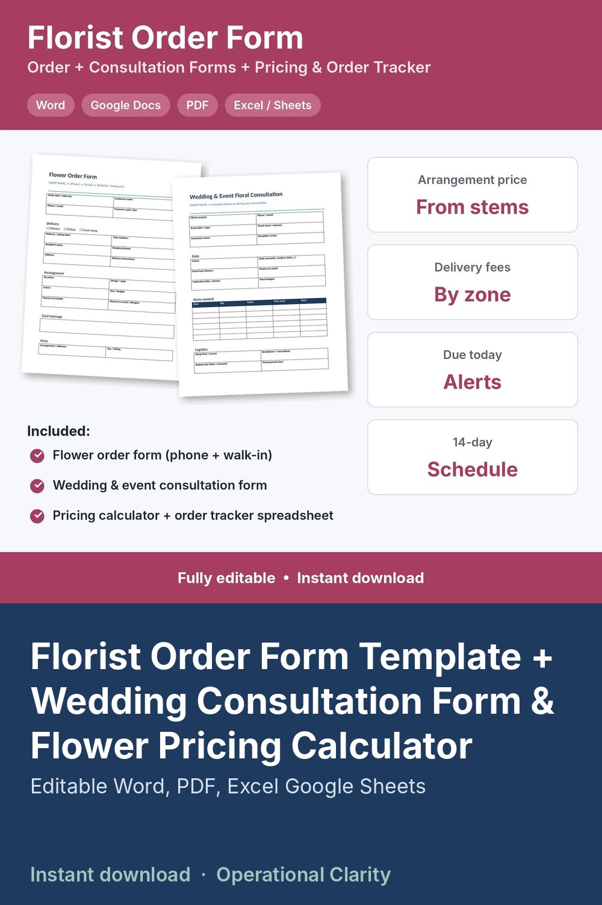

Florist Order Form Template + Wedding Consultation Form & Flower Pricing Calculator

FLORIST ORDER FORM + WEDDING CONSULTATION FORM + FLORIST PRICING CALCULATOR & ORDER TRACKER | Editable Word, PDF & Excel / Google Sheets | Instant Download
Take every flower order the same way, price every arrangement from your real stem costs, and see what's going out for delivery each day.
PRINTABLE FORMS (Word + PDF, editable)
• Flower Order Form: customer, delivery or pickup, recipient, address and time window, occasion, colors, flowers to include or avoid, allergies, card message and price
• Wedding & Event Floral Consultation: client, venues, guest count, style, must-have flowers, items needed with prices, setup, vase pickup and payment dates
FLORIST PRICING CALCULATOR & ORDER TRACKER (Excel / Google Sheets)
• Stems & supplies: enter your bunch or case price and stem count. Cost per stem calculates.
• Designs: build each arrangement from stems and hardgoods (vase, foam, ribbon, wrap, card). Flower cost, hardgoods cost, labor, suggested price, cost of goods % and profit calculate from YOUR markups.
• Orders: design, quantity, delivery date and zone, card message, paid / unpaid and status. Price, delivery fee, sales tax and total fill in automatically. DUE TODAY, TOMORROW and LATE alerts.
• Delivery schedule: the next 14 days with orders, arrangements, revenue and how many aren't ready yet
• Dashboard: orders and revenue this month, average order, unpaid balance, deliveries today and tomorrow, best-selling design
WHAT YOU GET
• Flower Order Form (Word + PDF)
• Wedding & Event Floral Consultation Form (Word + PDF)
• Florist Pricing Calculator & Order Tracker (.xlsx)
• Start Here guide (PDF)
Example designs and orders are included so you can see how it works. Replace them with your own prices.
GOOD TO KNOW
• Digital download. No physical item will be shipped.
• Markups and example prices are a starting point. Set your own.
• For use in your own business. No reselling or sharing of the files.